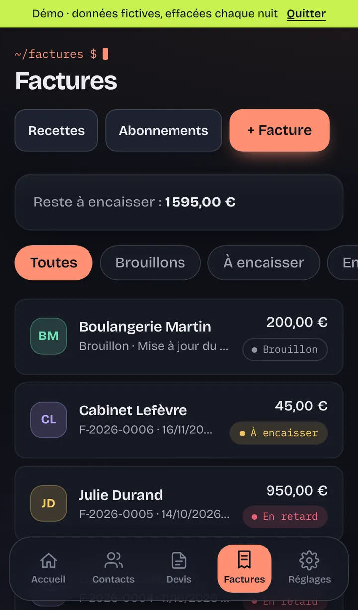
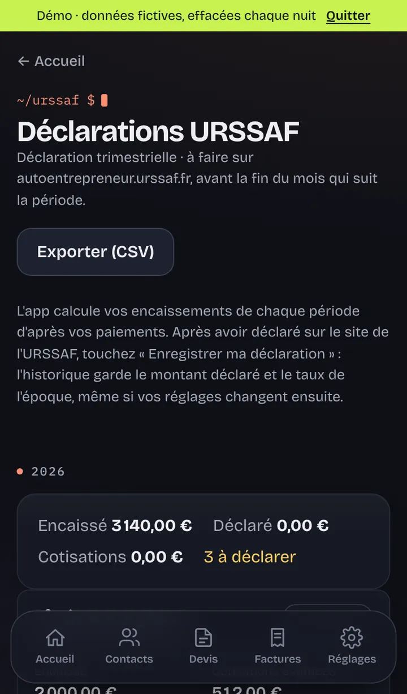

Projet personnel · projet phare
Gestion : une application de gestion pour indépendants
Prospects, clients, devis, factures et encaissements, depuis un ordinateur et un iPhone, en respectant les règles légales de facturation.
- Depuis
- Septembre 2026
- Cadre
- Projet personnel
- Équipe
- Seul
- Statut
- En production
Démo publique : données fictives remises à zéro chaque nuit.
01Contexte
- Cadre : projet personnel, depuis septembre 2026, développé seul.
- Statut : en production, utilisé en conditions réelles.
02Objectif
Donner aux indépendants un outil simple pour gérer leurs prospects, clients, devis, factures et encaissements, depuis un ordinateur et un iPhone, en respectant les règles légales de facturation.
03Fonctionnalités principales
- Contacts et suivi commercial (prospect → contacté → devis → gagné), relances.
- Devis transformés en facture en un clic, PDF générés automatiquement.
- Factures numérotées sans trou, impossibles à modifier une fois émises (correction par avoir), relances de paiement sur 3 niveaux.
- Tableau de bord : chiffre d'affaires encaissé, montant à déclarer à l'URSSAF, seuils à surveiller.
- Installable sur iPhone comme une application, connexion par Face ID, notifications le matin s'il y a quelque chose à faire.
- Plusieurs entreprises sur une même installation, chacune avec sa propre base de données, sur invitation.
- Export complet des données (PDF + tableaux) et copie sur Google Drive.

Pensé d'abord pour le téléphone : chiffre d'affaires encaissé de l'année avec la jauge du seuil de franchise de TVA, montant à déclarer à l'URSSAF pour le trimestre avec les cotisations estimées, puis les factures en retard et les devis en attente. La barre de navigation flottante reste à portée de pouce.

Chaque facture affiche son numéro continu (F-2026-0006…), son montant et son statut : brouillon, à encaisser ou en retard, calculé d'après l'échéance. Un brouillon n'a pas encore de numéro : il n'est attribué qu'à l'émission (défi 1).

Les encaissements de chaque trimestre sont calculés à partir des paiements, puis l'utilisateur enregistre ce qu'il a déclaré. Le taux de cotisation de l'époque est figé : modifier les réglages ne réécrit pas le passé.
Captures de la démo, données fictives.
04Architecture
- Nuxt 4
- Interface Vue 3 en TypeScript, installable sur iPhone (PWA), connexion par Face ID.
- API Nuxt (Nitro)
- Une route par action, données validées par Zod, session revérifiée à chaque appel, notifications Web Push.
- SQLite
- Une base par entreprise avec Drizzle ORM ; un trigger empêche de modifier une facture émise.
Conteneurs Docker (application + Gotenberg pour les PDF) derrière un reverse proxy Nginx avec HTTPS, sur un VPS Debian.
05Défis et solutions
- Garantir une numérotation des factures continue et sans trou, comme l'exige la loi.
Le numéro est attribué à l'émission, dans une transaction SQL, et un trigger SQLite empêche de modifier ou de supprimer une facture émise, même par erreur dans le code.
- Isoler les données de chaque entreprise.
Une base SQLite par entreprise : impossible de mélanger deux clients, et un export ou une suppression ne concerne qu'un seul fichier.
- Face ID derrière un reverse proxy.
La bibliothèque déduisait une mauvaise adresse d'origine. J'ai fixé l'origine par configuration et imposé la vérification biométrique.
- Ne jamais perdre une facture, qui doit être conservée 10 ans.
Sauvegarde chiffrée chaque nuit, contrôle d'intégrité, test de restauration, et alerte si une sauvegarde échoue.
- Des montants exacts.
Tous les montants sont stockés en centimes (entiers), jamais en nombres à virgule.
06Évolutions possibles
Facture électronique (Factur-X) avant l'obligation de septembre 2027, acceptation des devis en ligne par le client.